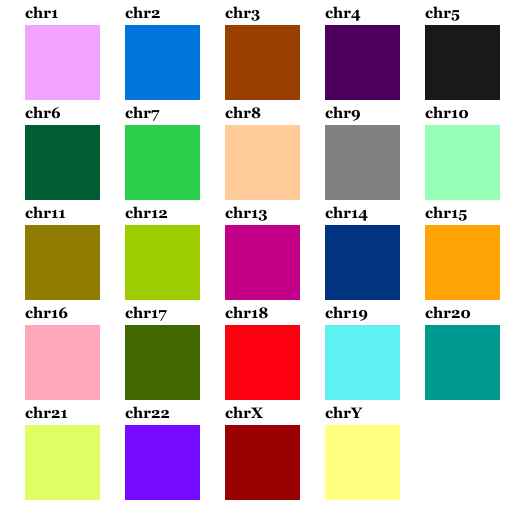

Additional topics
Binning
Most likely it would be better to bin the Hi-C data according to TAD boundaries than to use regular binning. TADs are compact by definition which makes it ideal to group together chromatin based on them. By having bins placed regularly and with the same size, many of them will cross more than one TAD. Hence regular binning might average out important differences that would be found if the simulations were based on TADs.
While you can use non-regular binning, chromflock can at the moment only use beads of the same size.
The contact probability matrix
The input to chromflock is the contact probability matrix which, for each pair of beads states the probability that we find those beads in contact in any of the structures. If we would know how often each bead is in contact with every other bead in nuclei we could use that data right away.
Unfortunately neither Hi-C or TCC provides absolute measurements since they are affected by several biases.
First of all the concept of contact is not well defined. It is known that Hi-C has a certain capture range which is small, but not neglectable. Most likely it is small enought that we don’t need to care about it here.
A few factors will also contribute to the efficiency of each genomic site, i.e., how easy it can be ligated.
Matrix balancing of the Hi-C matrix (that can be done with the KR-algorithm) is often used as a pre-processing step when normalizing or correcting contact data. It should be noted that using such method, properties like chromatine density will also be normalized away.
Ellipsoidal domain
It is possible to use an ellipsoidal domain. Here follows some notes on how it is implemented and how it differs to a spherical domain.
Slower collision detection
At the moment, there is no special handling for ellipses when detecting collisions. The same binning structure as we use for spheres is used to detect neighbours in ellipsoids. As a consequence a few bins will always be empty so the remaining bins have to host more beads.
The force keeping the beads inside the domain, \(F_s\), is different. And slower.
The direction and magnitude of the force that keeps the beads inside the domain is found by identifying the closest point on the ellipse from each bead. This involves solving a high order polynomial since there can be multiple solutions. The force is zero for any bead that is completely inside the domain so we can expect that there is a unique solution to the problem. This is solved with a few iterations of Newtons method, see below.
Several distinct ways to incorporate per-bead radial information.
If there is radial information available, it can be interpreted in different ways. The major options are: 1) As geodesic distance to the domain boundary (normalized by the largest distance). 2) The length to the domain boundary when travelling along the ray that goes through the centre of the domain and the bead (normalized by this distance). Both alternatives will be equivalent to the definition that we use for spheres when the all axes of the ellipsoid are equal.
Distance from point to Ellipsoid
To find the shortest path from a point to an ellipsoid involve finding the roots of a 6th degree polynomial, see [1] and [2].
We define an ellipsoid, \(E\) by the length of it’s axes, \(a\), \(b\), and \(c\) as the set of points \({(x,y,z)}\) for which:
In matrix form we could write is as \(x^TAx = 1\) where
To find the closest point \(x\in E\) to a arbitrary point \(P\) could be formulated as:
Using Lagrange multipliers, we find the equation:
The optimality condition states that
which gives
We insert that into \(x^TAx=1\) and get
Eq. 2 can the be solved numerically (for \(\lambda\)) using Newtons method, note that is isn’t complicated since \(A\) is diagonal. Finally \(x\) is obtained from Eq. 1.
There are other ways to find the closest point, below follows another approach. For a point \(P = (x_P,y_P,z_P)\) on \(E\) the surface normal is:
It can be shown that the closest point \(P \in E\) from another point \(Q\), \(P-Q\) is parallel to \(N_E(P)\).
Hence, at the solution:
With the help of some extra notation: \(A=1/a^2\), \(B=1/b^2\) \(C=1/c^2\) we see that:
If we extract two equations from Eq. 3 and add the condition that \(P\) is on \(E\) we get the following set of equations:
which we can compose into a vectorial function which is quadratic in \(P\).
We can find zeros to \(C(P)\) using the Newton-Raphson method. In general:
where superscript in parenthesis denotes sucessive updated numbers and \(J\) is the Jacobian matrix, i.e.,
Scaling projection
Any point \(Q\neq 0\) can be scaled onto and ellipse. Let
Then \(S(Q) = Q/\sqrt{s(Q)}\) is on \(E\) since \(S(cQ)=S(Q)c^2\) and hence
For a more general setting where the ellipsoid is described by a matrix, \(A\), we can introduce the quadratic form \(\langle a, b \rangle = a^TAb\) and the norm \(||a|| = \sqrt{\langle a, a \rangle }\) then it is clear that \(||\frac{a}{||a||}|| = \frac{||a||}{||a||}\).
This projection the same as scaling along a line that passes the origo. We define a scaling distance as:
Please note that \(d_{S(E)}(Q)\) isn’t the shortest Euclidean distance to the ellipsoid unless \(a=b=c\).
Using this we introduce a notation for the shortest distance:
Domain Error / Partial derivatives
For a point \(p\) we first find \(r = d_G(p)\). If \(r+R_0 > 0\), the error \(E_d(p) = (r - R_0)^2\), otherwise \(0\).
Quick discards
If the domain is defined by an ellipsoid, \(E=(a, b, c)\) then (lemma) for any point \(Q \in E_\delta=(a-\delta, b-\delta, c-\delta)\) the geodesic distance to \(E\) is at least \(\delta\), i.e., \(d_{G(E)}(Q)\geq \delta\) (equality along the axes). Equivalently:
Numerical evaluation
In this section we will study the geodesic shortest distance vs the distance obtained by scaling for relevant \(E\) and distances from \(E\), as well as the direction of the normal of \(E\) at \(P(Q)\) vs \(S(Q)\).
How can it be tested? What has been tested?
Method maxerr relerr angerr t tpp
scaling1 1.3368e-01 83.55574 1.3161+01 1.17e-01 8.50e+07
scaling2 3.6489e-01 2.28e+02 3.0681+01 1.87e-01 5.34e+07
bektas-1 1.3480e-02 8.425478 1.5497+00 2.85e-01 3.49e+07
bektas-2 1.4290e-04 0.089318 1.4435-02 4.27e-01 2.34e+07
bektas-3 1.4824e-08 0.000009 3.4150-06 5.70e-01 1.75e+07
bektas-4 3.3577e-12 0.000000 3.8181-06 7.01e-01 1.42e+07
bektas-5 3.3577e-12 0.000000 3.8181-06 7.02e-01 1.42e+07
bektas-99 3.3577e-12 0.000000 3.8181-06 7.02e-01 1.42e+07
lagrange1 1.1443e-01 71.52170 6.6816+00 3.11e-01 3.21e+07
lagrange2 1.6737e-02 10.46074 9.4292-01 4.78e-01 2.09e+07
lagrange3 4.4791e-04 0.279945 2.3522-02 6.46e-01 1.54e+07
lagrange4 3.3536e-07 0.000210 1.6817-05 8.13e-01 1.22e+07
lagrange5 2.3831e-13 0.000000 3.8181-06 9.83e-01 1.01e+07
lagrange99 2.3831e-13 0.000000 3.8181-06 9.83e-01 1.01e+07
polynomial1 9.0911e-02 56.81946 7.1800+00 1.38e-01 7.21e+07
polynomial2 4.0359e-02 25.22448 2.8665+00 2.81e-01 3.55e+07
polynomial3 1.1012e-02 6.883039 6.4450-01 4.71e-01 2.12e+07
polynomial4 1.0581e-03 0.661334 4.6778-02 6.59e-01 1.51e+07
polynomial5 1.0840e-05 0.006775 3.4573-04 9.01e-01 1.10e+07
polynomial99 3.5340e-12 0.000000 3.8181-06 9.21e-01 1.08e+07
Visualizing structures
The cmm files generated by mflock can be directly opened in UCSF Chimera, most likely also in their later software ChimeraX.
The color map that is encoded in chromflock is for haploid structures only:
